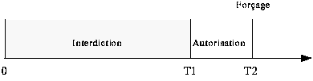

Artémis (1995)Figure 1 - Artémis : Divinité grecque de la nature sauvage et de la chasse, il tue le chasseur géant Orion et le change en constellation.
La fusée Artémis est la suite immédiate à Orion. D'ailleurs, elle a à peu
près le même gabarit que cette dernière, mais
avec une multitude d'améliorations apportées à
tous les niveaux. Elle a plusieurs tâches: déployer par
elle-même son parachute lorsqu'elle est rendue à son
point de culmination, cueillir des données physiques au cours
de son envolée, les emmagasiner en mémoire, les
transmettre au sol par voie hertzienne afin de les visualiser en
temps réel et les retransmettre directement à un
ordinateur personnel lors de la récupération de la
fusée. Sur la figure 2, nous illustrons les
différentes phases de la fusée lors de son vol.

Figure 2 -Les différentes phases d'Artémis 1 La structure mécaniqueLa structure mécanique de la fusée expérimentale est divisée en quatre blocs, chacun ayant un rôle spécifique à jouer. Le premier bloc est composé principalement du moteur et le second contient les éléments nécessaires à la récupération de la fusée. Le troisième niveau est l'endroit où se situe l'électronique de base. C'est ce bloc qui veille au bon déroulement des expériences et de la récupération. Finalement, le quatrième niveau contient les éléments de la télémesure. Ainsi, la configuration de la fusée se divise en quatre blocs distincts. Chaque bloc est divisé par un joint inter-bloc qui lui est propre. La structure interne, que l'on appelle aussi la porteuse, sera composée de deux poutres centrales reliant les joints inter-blocs entre eux. Ces pièces sont faites en aluminium. Toute cette structure interne est enveloppée par un fuselage composé soit d'aluminium, ou de fibre de carbone. Pour faciliter l'accès à l'instrumentation interne de la fusée, le fuselage est divisé en demi-cylindres pouvant être retirés lorsque nécessaire. 1.1 Bloc moteurCe bloc a une configuration bien particulière. En effet, ce niveau, composé du moteur et du carburant, a un diamètre inférieur au reste de la fusée. Cette partie, que l'on appelle bloc moteur, est insérée dans le joint inter-bloc ou le "joint moteur". Pour conserver la structure aérodynamique de la fusée, le bloc moteur est recouvert d'un cylindre qui est le prolongement du fuselage des blocs supérieurs. C'est à ce niveau que seront fixés les ailerons servant à stabiliser la fusée au cours du vol. Le moteur utilisé est alimenté au propergol solide. Pour des raisons d'autorisation de vol, le GAUL utilisera un moteur professionnel pour propulser la fusée. Il s'agit d'un moteur français utilisé lors des campagnes de lancement françaises. Ce moteur, de type Chamois, est fourni par le CNES. C'est effectivement ce moteur qui a été utilisé l'année dernière par le GAUL lors du lancement de sa première fusée, Orion. Les propriétés caractéristiques physiques de ce moteur sont illustrées au tableau 1.
Tableau 1: Caractéristiques du propulseur Chamois 1.2 Conception d'un moteur1.3 Bloc récupération1.4 Bloc électronique1.5 Bloc télémesure
Tableau 2: Données techniques (théorique) de la fusée 2 L'électroniqueMaintenant que la visualisation de chaque bloc de la fusée est faite, nous pouvons attaquer la partie de l'électronique d'Artémis. L'électronique est présente à plusieurs niveaux. Ses principaux modules sont: l'ordinateur de vol, l'émetteur, les capteurs et le séquenceur. Le bloc diagramme de l'électronique est présenté à la . Il permet de visualiser tous les liens existant entre les différents modules.
Figure 3 -Bloc diagramme de l'électronique 2.1 L'ordinateur de vol
Dans la
section précédente, nous avons vu que le
diamètre de la fusée était de 10 cm, ce qui
restreint à une largeur de plaque de 6,35 cm par environ 25
cm de longueur. Il est donc important de minimiser le nombre de
composantes électroniques sur la plaque du circuit
imprimé. Le micro-contrôleur est programmé, lors
de son vol, pour prendre une acquisition des différents
capteurs (et des senseurs) à tous les 10 ms. Il se sert de
ses convertisseurs A/N intégrés afin de convertir le
signal analogique, fourni par le capteur, en une donnée
numérisée sur 8 bits. Ensuite, le MC68HC11 se charge
de la transférer à l'émetteur par le biais du
port série et à la mémoire externe, en vue de
la récupérer à la fin de l'expérience.
En plus de la mémoire externe sur la carte, une seconde
mémoire coulée dans le Plexiglass est branchée
sur la carte afin de jouer le rôle d'une "boîte
noire". C'est à l'aide de la minuterie interne du
micro-contrôleur que tous les événements qui
requièrent un contrôle sur le temps se
concrétisent. L'acquisition des données et l'ouverture
du parachute sont les événements
contrôlés par la minuterie. Le compteur interne est
comparé à chaque coup d'horloge à tous les
registres de comparaison. Lorsqu'il est égal à l'un de
ces registres, la minuterie génère une interruption et
le micro-contrôleur saute à la routine correspondante.
C'est ainsi que l'on traite tous ces événements.
Enfin, la dernière fonction du MC68HC11, et tout aussi
importante, est de servir d'interface avec un ordinateur personnel.
Il utilise son port série asynchrone pour communiquer avec
celui du PC. Il s'en sert avant l'expérience afin de recevoir
des données d'initialisation, dont celle qui comprend le
temps que prendra la fusée avant d'atteindre le sommet de sa
trajectoire. Il est utilisé pour ouvrir le parachute. Lors du
vol, l'ordinateur de vol se sert aussi de son port série afin
de relayer les données à l'émetteur. À
la fin de l'expérience, la communication est de nouveau
rétablie afin de récupérer les données
emmagasinées dans la mémoire. La vitesse de
transmission série est réglée à 9600
bits par seconde lorsqu'il y a communication au sol et de 4800 bits
à la secondes lors du vol. Cette dernière vitesse est
restreinte due à la bande passante du récepteur.
2.2 Séquenceur Figure 4 - Diagramme de la fenêtre temporelle du séquenceur 2.3 TélémesureA) L'émetteurB) Le récepteur3 Les expériencesNous ne pouvons pas parler d'une fusée expérimentale sans ses expériences à bord. Pour Artémis, elles sont la mesure de vitesse, la mesure d'altitude et la détection d'état de la fusée. La mesure de vitesse et la mesure d'altitude sont effectuées à l'aide de capteurs de pression de type tube de pitot. La vitesse est calculée à partir d'une pression dynamique alors que l'altitude dérive d'une pression statique. Dans chaque cas, le signal fournit par les différents capteurs devra passer par un ampli différentiel, puis être filtré, pour ensuite être acheminé sous forme d'un signal analogique vers le micro-contrôleur. Celui-ci se charge de numériser et de mémoriser les résultats afin de pouvoir les interpréter plus tard. Enfin, plusieurs capteurs du genre on/off' sont placés à l'intérieur de la fusée afin d'indiquer l'état de la fusée. Il y a un capteur pour la détection du décollage, un pour la détection de l'ouverture de la porte du parachute et un pour le déploiement de celui-ci.4 Logiciel sur PCL'emploi d'un ordinateur personnel s'avère essentiel pour communiquer avec la fusée. La communication, PC-fusée, est établie par un port série (protocole RS-232C). Le nouveau programme qui a été élaboré se doit d'être polyvalent, ce qui veut dire qu'il se doit d'être utilisable pour tout type de fusée considéré. De plus, il doit essentiellement permettre d'enregistrer le temps propre de l'ouverture du parachute, l'acquisition des données transmises par voie hertzienne et celles emmagasinées dans une mémoire, s'il y a lieu, à bord de l'appareil. Le dernier type de communication est unidirectionnel, de la fusée vers le PC, empruntant le chemin de la voie hertzienne à l'aide de l'émetteur et du récepteur. Les données reçues sont automatiquement affichées à l'écran sous forme graphique; un graphe correspondant à chacune des expériences considérées. De plus, des bits d'états sous la forme de voyants lumineux seront affichés au bas de l'écran. Un aperçu de l'écran est représenté ci-dessous:
Figure 5 - Représentation de l'écran d'un PC lors de la réception des données HistoirePour une deuxième année consécutive, nous avons participé au Festival de l'Espace qui a eu lieu du 19 au 27 août 1995. Cet évènement annuel se tenait à Bourges en France. Durant une semaine, des groupes venant de partout dans le monde, mais surtout en France, se réunissaient pour la phase finale de leur projet. La majeure partie des activités avaient lieu au palais des congrès à Bourges. L'équipe du Gaul y avait un kiosque pour présenter le projet ainsi que la fusée au public.C'est à ce même endroit que cet équipe a effuctué les dernières mises au point sur Artémis ainsi que toute la série de tests, pour la qualification du vol. Durant toute la semaine, ils ont effectué les contrôles et les correctifs qui s'imposaient. Initialement, le lenacement était prévu le samedi à 13h00. Cependant, un problème avec le capteur de vitesse est survenu et ils ont été incapable de le résoudre à temps pour le samedi. Le lancement a donc été reporté de 24 heures. Le dimanche, 10h48, ils sont sur le pas de tir. À 12h55, la météo se fait menaçante et une fine pluie commence à tomber; nous sommes à H-10 minutes. Dû à des problèmes météo, on reporte le lancement de 15 minutes afin de laisser passer l'averse. Il est maintenant prévu à 13h14. Après les vérifications d'usage, les dernières secondes du compte à rebours défilent : 10-9-8-7-6-5-4-3-2-1 mise à feu! Pour une deuxième année consécutive, ils ont perdu très rapidement le contact visuel avec la fusée en raison d'un plafond nuageux très bas. Durant les secondes qui ont suivies, le spectre d'Orion plane sur l'équipe du Gaul (Orion, la première fusée du Gaul s'est écrasé). Et puis, ils entendent à la radio: "le parachute est déployé et la descente d'Artémis se fait normalement." Ces constatations fut possible à l'aide des données reçues à la station de télémesure. Quelques instants plus tard, ils apperçoivent effectivement Artémis sortir des nuages, descendant paisiblement sous son parachute! La retransmission a été impeccable et les résultats aussi! Artémis est couronnée d'un succès total! C'était l'euphorie! RésultatL'altitude maximale de la fusée a été de 1500 m à 11,4 secondes après le sécollage. L'altitude maximale prévue était de 1400 m. L'ordinateur de vol a alors permis l'ouverture du parachute pour une descente au sol en douceur. La vitesse de descente prévue de la fusée et calculée selon la dimension du parachute et divers autres paramètes était de 14,8 m/s. La vitesse réelle de descente a cependant été de 19,8 m/s. Le temps total de descente a été de 75,66 secondes. La fusée a atteint une vitesse maximale de 164,7 m/s après 2,2 secondes, ce qui correspont à la durée de combustion du propulseur Chamois. La vitesse de la fusée à l'ouverture du parachute était de 63m/s après 11,37 secondes. ConclusionL'équipe du Gaul sort gagnant de cette expérience au Festival de l'Espace; la fusée Artémis fut lancée avec succès, comblant ainsi tous les attentes et aussi celles de tous ceux et celles qui ont soutenu le Gaul depuis deux ans. De plus, le Gaul a approfondi ses connaissances sur tous les plans, que ce soit sur le plan technique, le plan théorique ou sur le plan organisationnel. Ce lot de connaissances devient la fondation pour les années à venir pour le Gaul. Membres du Gaul lors de ce projet. Quelques résultats sur graphique Photos | ||||||||||||||||||||||||||||||||
|
Conception: Steve Potvin
Dernière modification: 27/07/1999 |